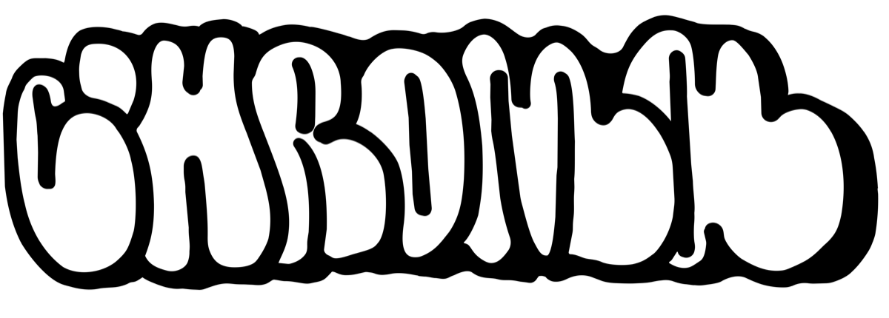
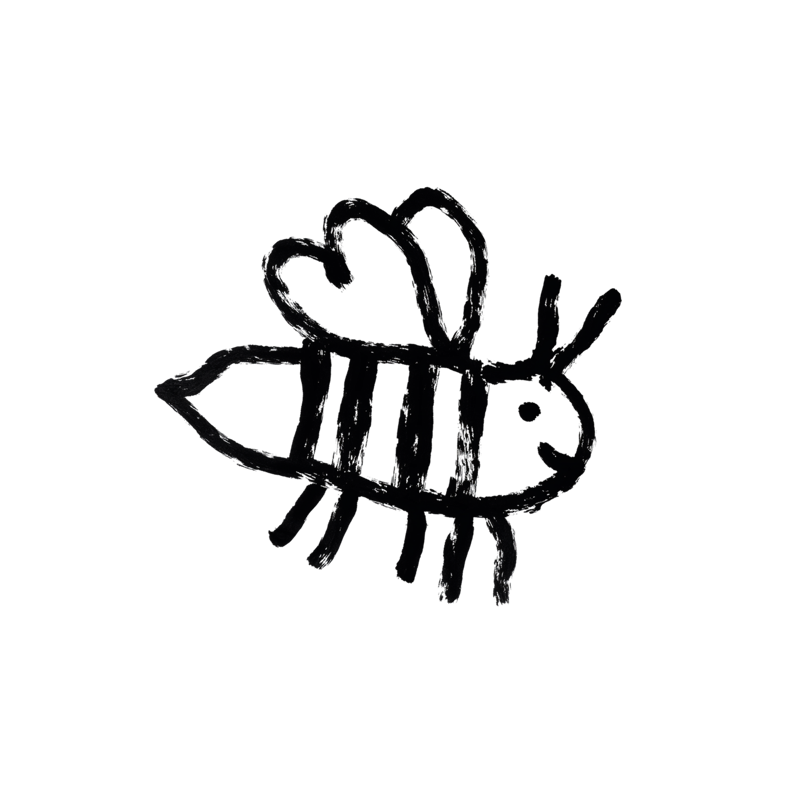
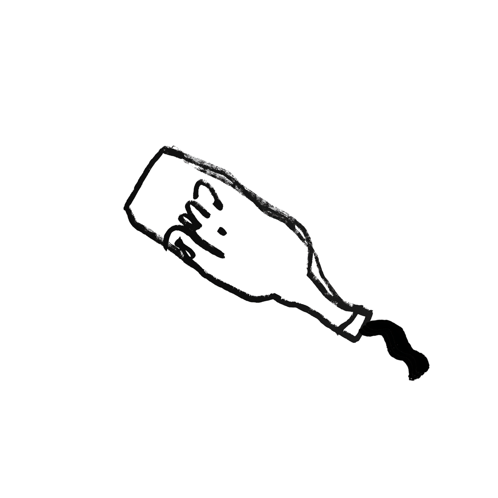

Die Speise- und Getränkekarte von Chroma – Deli & Gift Shop in München. Chroma bietet kuratierte Delikatessen, Naturweine und hochwertige Getränke. Standort: Barer Straße 38, Eingang Gabelsbergerstraße, 80333 München (Maxvorstadt).

